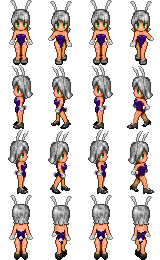

<!DOCTYPE html>
<html>
	<head>
		<meta charset="utf-8">
		<title></title>
		<style>
			canvas {
				border: 1px solid #ccc;
				display: block;
				margin: 10px auto;
			}
		</style>
	</head>
	<body>
		<!--  -->
		<canvas  width="600" height="400"></canvas>
		<script type="text/javascript">
			var myCanvas = document.querySelector('canvas')
			var ctx = myCanvas.getContext('2d')
			
			var image = new Image();
			// 加载完成事件
			image.onload = function(){
				// 总图片大小
				var imageWidth = image.width
				var imageHeight = image.height
				// 大图片上的小图片的大小
				var personWidth = imageWidth/4
				var personHeight = imageHeight/4
				// 绘制在画布中心
				var index = 0;
				var x0 = ctx.canvas.width/2 -personWidth/2
				var y0 = ctx.canvas.height/2 -imageHeight/2
				setInterval(function(){
					index ++;
					ctx.clearRect(0,0,ctx.canvas.width,ctx.canvas.height)
					ctx.drawImage(image,index*personWidth,0,personWidth,personHeight,x0,y0,personWidth,personHeight)
					if(index>=3){
						index = 0
					}
				},300)
			}
			image.src = '../img/04.png'
			
		</script>
	</body>
</html>
